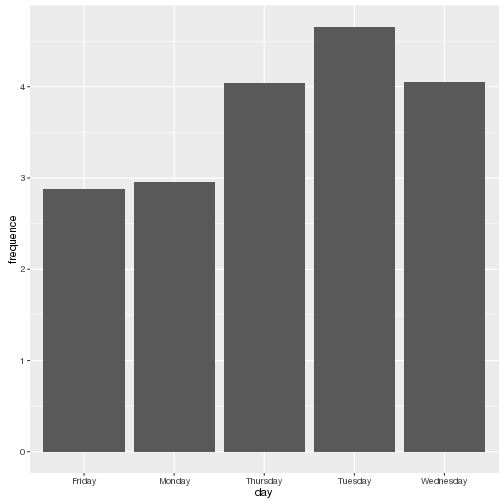

Open Cantine
Reconstituer et visualiser des données parcellaires
Les données de la cantine
Variables
- Date
- Heure
- Numéro du ticket
- Incrémenté à chaque passage
- Numéro de caisse
- 1: Cantine
- 2: Cantine
- 3: Cantine
- 4: Cafétéria
Évolution des numéros de ticket par caisse
Passage par minute ces derniers jours

Fréquences par jour de la semaine

Débit moyen par caisse sur un service